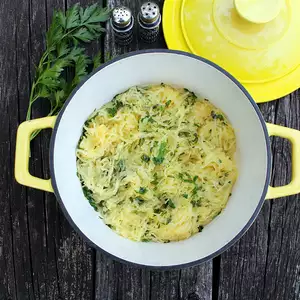

Herbed Spaghetti Squash

Description
Easy recipe for a simple spaghetti squash that goes great with anything!
Ingredients
- 1 small spaghetti squash, halved and seeded
- 2 ½ tablespoons butter
- ½ tablespoon chopped fresh chervil
- ½ tablespoon chopped fresh basil
- ½ tablespoon chopped fresh parsley
- ½ tablespoon chopped fresh sage
- ½ tablespoon chopped fresh chives
- ½ teaspoon salt
- ⅛ teaspoon freshly ground black pepper
Steps
- Preheat the oven to 375 degrees F (190 degrees C).
- Place spaghetti squash halves cut-sides down in a baking dish and add enough water to come 1/2-
inch up the sides of the baking dish. Cover with aluminum foil.
- Bake in the preheated oven until the squash can easily be pierced with a sharp knife, about 45
minutes. Turn squash over, cover with foil again, continue to cook until the squash is very
tender, about 15 more minutes. Remove from the oven, uncover, and allow to cool slightly. Using a
fork, gently pull the strands of squash away from the peel and place into a bowl.
- Melt butter in a skillet over medium heat. Add spaghetti squash strands, chervil, basil, parsley,
sage, chives, salt, and pepper and cook until flavors are combined and heated through, 2 to 3 minutes.